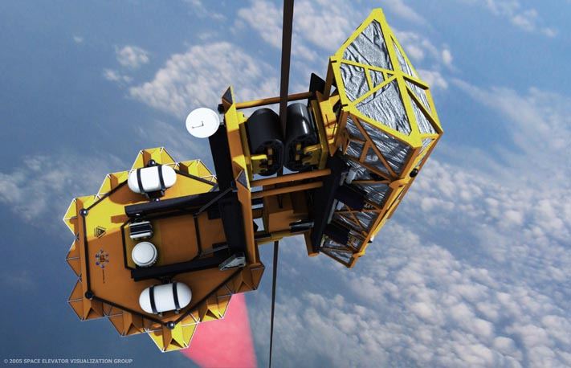

The space elevator is a vertical railroad, a ribbon of carbon nanotubes with one end attached to an anchor station in the equatorial Pacific Ocean and the other end 100,000 km up in space. This ribbon is ascended or descended by climbing vehicles transporting payloads to and from space. The climbers are powered by lasers stationed on Earth and pointed at the climber’s photovoltaic arrays. All of the technology required for construction exists today. The first space elevator will take eight years and cost $8 billion to build. Once constructed the cost of getting to space will be comparable to global overnight shipping.
Below you will find brief overviews on each of the technologies required to build the space elevator. This is not an exhaustive discussion or list.
At the heart of the space elevator is the ribbon extending 100,000 km (62,000 miles) from Earth to space. This ribbon is as thin as paper and varies in width up to 1 m wide. Composed of carbon nanotubes it can support well over 50 tons. Climbing vehicles ascend the ribbon to high-Earth orbit or beyond where they release into Earth orbit or are thrown to other planets at high speed. The ribbon is specifically designed to survive small space debris, radiation, wind,...
For production, inch long carbon nanotubes are spun into threads which are then combined into a ribbon. This process is identical to how cotton is spun into thread and made into ribbons for conventional use. We even plan to use the same machines. Our initial spinning of carbon nanotubes (2003) went extremely well and produced high quality thread on a conventional spinning machine.
Carbon nanotubes have been produced and measured at strengths 30 times that of steel and other high strength materials. They have been produced by many groups in small quantities up to 18 inches (55 cm) in length, larger quantities in 5 inch length (14 cm) and by the pound in lengths up to ¼ inch (6mm). These were all the same basic process with slight modifications and different growth times. What we need to build the space elevator are carbon nanotubes ~12 times the strength of steel and ¾ inch (2 cm) in length. We have far surpassed that and will begin commercial mass production soon.
For more information on carbon nanotubes click here.
The goals for space elevator climbing vehicles are speed, efficiency, and carrying capacity. It's about how many kilograms can be carried to space per year per dollar. This is not too different from the current requirements for cars. Our climbers are actually similar in many ways to conventional electric vehicles. The obvious difference is the climbers grab a ribbon instead of a road.
Competitions have been held globally for 20 years where teams of university students and private groups have constructed climbers to race up ribbons. These competitions have had battery and laser powered climbers that have hit speeds of 60 mph (100km/hr) on even short ascents of hundreds of feet.
Our current designs for climbers use off-the-shelf electric vehicle motors and controls, conventional photovoltaic arrays, composite structures, and flat rubber tires. These conventional components have all the performance required for a climber. A selected automotive partner is expected to build the several thousand climbers we will require initially.
Our current designs for climbers use off-the-shelf electric vehicle motors and controls, conventional photovoltaic arrays, composite structures, and flat rubber tires. These conventional components have all the performance required for a climber. A selected automotive partner is expected to build the several thousand climbers we will require initially.
To power the climbers on their ascent we need to deliver energy efficiently from Earth. We must avoid the rocket trap - the infamous rocket equation - of attempting to carry all our fuel with us. Sending electricity up the ribbon was considered, but a quick calculation tells us that the electrical resistance of the ribbon is too high. The best method is to use a high-power laser on Earth focused on the photovoltaic array of a climber to provide continuous power. To do this we need roughly a megawatt of laser power, a large set of optics to collimate the beam and a photovoltaic array to receive the power. The photovoltaic array is not that different than what is regularly seen on rooftops though it may be a different type of array to improve our efficiency. The laser we need is identical to the fiber lasers currently used in industrial metal cutting and welding systems. For the optics we need only look to any large astronomical telescope: Hobby Eberly, Keck,...
The question of space debris and how it might damage the space elevator comes up regularly. The original designs addressed the smaller debris by use of a ribbon - small, untrackable debris will produce small holes in the ribbon and minimal damage. The lifetime of the ribbon in the current environment was estimated to be 200 years. With the growing strength of carbon nanotubes this lifetime grows dramatically.
Debris over a few centimeters diameter is tracked by various governmental and private entities. Debris of 1 cm diameter to 10 cm diameter is critical for the space elevator. This debris is numerous and can, if it impacts at a large angle to the elevator, severely damage or sever the elevator. For this reason we plan to use commercial debris tracking and an upgraded system to track all debris down to 1 cm diameter. Once the debris is tracked the lower end of the ribbon/anchor station can be moved to avoid collisions. In the current environment we expect to be moving the lower end of the ribbon on average a kilometer every 12 hours.
The space elevator is deployed from the top down. Four large satellites will take an initial ribbon up to geosynchronous orbit where it will be deployed downward as the spacecraft moves upward. The lower end will be captured by and attached to the anchor station and the spacecraft will become the first part of the counterweight at the upper end of the ribbon. Then climbers will ascend this initial ribbon and attach additional ribbon to the existing one. At the upper end each of these climbers will stay as part of the growing counterweight. After about 200 climbers have ascended, the space elevator will be ready to carry 25 ton climbers for commercial operations.
The space elevator will transport 15+ ton payloads every two days to geosynchronous orbit, the Moon, Mars and other destinations for hundreds to a couple thousand dollars per kilogram. These costs are <1% - 10% of any proposed rocket costs to these destinations. The climbers will be able to carry any payloads including fragile ones, humans, and extended objects to space without issue.
Often in science fiction books and movies the story requires excitement, tension, danger,... If a space elevator is in the story it seems to always come crashing down causing planetary wide destruction. (Equatorial canyon in the Red Mars series, “the scar” in the recent Foundation TV show,...) When an accurate model is done of what happens something quite different is found. No matter where a space elevator is severed - bottom, middle, top - all but the lowest few hundred kilometers fly out of Earth orbit off to space never to be seen again. The lowest part falls down to Earth but in any conceivable real situation it falls into the eastern equatorial Pacific Ocean and is light enough that it would hardly make a splash.
